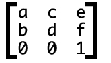

Your browser doesn't support the features required by impress.js, so you are presented with a simplified version of this presentation.
For the best experience please use the latest Chrome, Safari or Firefox browser.
CSS3 Transform(2D)
位移函数 translate()
语法：translate(tx,ty) | translateX(tx) | translateY(ty)
- tx是一个代表X轴（横坐标）移动的向量长度，当其值为正值时，元素向X轴右方向移动，反之其值为负值时，元素向X轴左方向移动。
- ty是一个代表Y轴（纵向标）移动的向量长度，当其值为正值时，元素向Y轴下方向移动，反之其值为负值时，元素向Y轴上方向移动。如果ty没有显式设置时，相当于ty=0。
- translateX(tx)等同于translate(tx,0)或translate(tx)
- translateY(ty)等同于translate(0,ty)
HTML
<div>
<img src="images/cardKingClub.png" alt="" width="70" height="100" />
<img src="images/cardKingClub.png" alt="" width="70" height="100" />
</div>
CSS
div {
width: 500px;
height: 300px;
margin: 30px auto;
position: relative;
background: url(images/bg-grid.jpg) no-repeat center center;
background-size: 100% 100%;
}
div img {
position: absolute;
top: 50%;
left: 50%;
margin-left: -35px;
margin-top: -50px;
}
div img:nth-child(1){
opacity: .5;
z-index: 1;
}
div img:nth-child(2){
opacity: 1;
z-index: 2;
transform: translate(100px,0);
}
缩放函数scale()
语法：scale(sx,sy) | scaleX(sx) | scaleY(sy)
- sx：用来指定横向坐标（X轴）方向的缩放向量，如果值为0.01~0.99之间，会让对象在X轴方向缩小，如果值大于或等于1.01，对象在X轴方向放大。
- sy：用来指定纵向坐标（Y轴）方向的缩放量，如果值为0.01~0.99之间，会让对象在Y轴方向缩小，如果值大于或等于1.01，对象在Y轴方向放大。如果sy没有显示设置，相当于sy=sx
- scaleX(sx)：相当于scale(sx,1)。表示元素只在X轴（水平方向）缩放元素。
- scaleY(sy)：相当于scale(1,sy)。表示元素只在Y轴（纵横方向）缩放元素。
- 在scale()函数中，取值除了可以取正值之外，同时还可以取负值。只不过取负值时，会先让元素进行翻转，然后在进行缩放。
旋转函数rotate()
语法：rotate(a)
- rotate()函数只接受一个参数值，单位为deg。
- a：代表的是一个旋转的角度值。其取值可以是正的，也可以是负的。如果取值为正值时，元素默认之下相对元素中心点顺时针旋转；如果取值为负值时，元素默认之下相对元素中心点逆时针旋转。
- 通过transform-origin属性可以改变旋转函数的基点
倾斜函数skew()
语法：skew(ax,ay)
- ax：用来指定元素水平方向（X轴方向）倾斜的角度。
- ay：用来指定元素垂直方向（Y轴方向）倾斜的角度。如果未显式的设置这个值，其默认为０。
矩阵函数matrix()
语法：matrix(a,b,c,d,e,f)
实际上，这六个参数，对应的矩阵就是：

matrix计算方法: x和y是元素初始原点的坐标，x’和y’则是通过矩阵变换后得到的新原点坐标。通过中间的那个3x3的变换矩阵，对原先的坐标施加变换，就能得到新的坐标了。依据矩阵变换规则即可得到：x’=ax+cy+e和y’=bx+dy+f：

例子：
transform: matrix(1,0,0,1,50,50);/*a=1,b=0,c=0,d=1,e=50,f=50*/
现在，我们根据这个矩阵偏移元素的中心点，假设是(0,0)，即x=0，y=0。带入上式结果，得x'=50,y'=50;
transform:matrix(1,0,0,1,50,50);等同于transform: translate(50px,50px)
Ttransform兼容性
- IE9中使用2D变形时，需要添加-ms-私有属性，在IE10+版本开始支持标准版本。
- Firefox3.5至Firefox15.0版本需要添加-moz-的私有属性，在Firefox16+版本开始支持标准版本。
- Chrome4.0+开始支持2D变形，在实际使用的时候需要添加-webkit-私有属性。
- Safari3.1+开始支持2D变形，在实际使用的时候需要添加-webkit-私有属性。
- Opera10.5+开始支持2D变形，在实际使用的时候需要添加-o-私有属性，但在Opera12.1版本不需要添加私有属性，不过在Opera15.0+版本需要添加私有属性-webkit-私有属性。
- 移动设备iOS Safari3.2+、Android Browser2.1+、Blackberry Browser7.0+、Opera Mobile14.0+、Chrome for Android25.0+需要添加私有属性-webkit-，而Opera Mobile11.0至Opera Mobile12.1和Firefox for Android19.0+不需要使用浏览器私有属性。
CSS
div {
width: 500px;
height: 300px;
margin: 30px auto;
position: relative;
background: url(images/bg-grid.jpg) no-repeat center center;
background-size: 100% 100%;
}
div img {
position: absolute;
top: 50%;
left: 50%;
margin-left: -35px;
margin-top: -50px;
}
div img:nth-child(1){
opacity: .5;
z-index: 1;
}
div img:nth-child(2){
opacity: 1;
z-index: 2;
-webkit-transform: translate(100px,0);
-moz-transform: translate(100px,0);
-ms-transform: translate(100px,0);
-o-transform: translate(100px,0);
transform: translate(100px,0);
}
CSS3 transform(3D)
3D位移函数
语法：translate3d(tx,ty,tz) | translateZ(tz)
- tx：代表横向坐标位移向量的长度；
- ty：代表纵向坐标位移向量的长度；
- tz：代表Z轴位移向量的长度。此值不能是一个百分比值，如果取值为百分比值，将会认为无效值。
- translateZ()函数在实际使用中等同于translate3d(0,0,tz)
HTML
<div class="stage s1">
<div class="container">
<img src="img/cardKingClub.png" alt="" width="70" height="100" />
<img src="img/cardKingClub.png" alt="" width="70" height="100" />
</div>
</div>
<div class="stage s2">
<div class="container">
<img src="img/cardKingClub.png" alt="" width="70" height="100" />
<img src="img/cardKingClub.png" alt="" width="70" height="100" />
</div>
</div>
CSS
.stage {
width: 300px;
height: 300px;
float: left;
margin: 15px;
position: relative;
background: url(img/bg.jpg) repeat center center;
-webkit-perspective: 1200px;
-moz-perspective: 1200px;
-ms-perspective: 1200px;
-o-perspective: 1200px;
perspective: 1200px;
}
.container {
position: absolute;
top: 50%;
left: 50%;
-webkit-transform-style: preserve-3d;
-moz-transform-style: preserve-3d;
-ms-transform-style: preserve-3d;
-o-transform-style: preserve-3d;
transform-style: preserve-3d;
}
.container img {
position: absolute;
margin-left: -35px;
margin-top: -50px;
}
.container img:nth-child(1){
z-index: 1;
opacity: .6;
}
.s1 img:nth-child(2){
z-index: 2;
-webkit-transform: translate3d(30px,30px,200px);
-moz-transform: translate3d(30px,30px,200px);
-ms-transform: translate3d(30px,30px,200px);
-o-transform: translate3d(30px,30px,200px);
transform: translate3d(30px,30px,200px);
}
.s2 img:nth-child(2){
z-index: 2;
-webkit-transform: translate3d(30px,30px,-200px);
-moz-transform: translate3d(30px,30px,-200px);
-ms-transform: translate3d(30px,30px,-200px);
-o-transform: translate3d(30px,30px,-200px);
transform: translate3d(30px,30px,-200px);
}
3D缩放函数
语法：scale3d(sx,sy,sz) | scaleZ(sz)
- sx：横向缩放比例；
- sy：纵向缩放比例；
- sz：Z轴缩放比例；
- scaleZ()和scale3d(1,1,sz)函数单独使用时没有任何效果，需要配合其他的变形函数一起使用才会有效果
3D旋转
语法：rotateX(a) | rotateY(a) | rotateZ(a) | rotate3d(x,y,z,a)
- 其中a指的是一个旋转角度值，其值可以是正值也可以是负值，正值表示顺时针，负值表示逆时针。
rotate3d()中取值说明：
- x：是一个0到１之间的数值，主要用来描述元素围绕X轴旋转的矢量值；
- y：是一个０到１之间的数值，主要用来描述元素围绕Y轴旋转的矢量值；
- z：是一个０到１之间的数值，主要用来描述元素围绕Z轴旋转的矢量值；
- a：是一个角度值，主要用来指定元素在3D空间旋转的角度，如果其值为正值，元素顺时针旋转，反之元素逆时针旋转。
重要属性
transform-origin
CSS变形进行的旋转、移位、缩放等操作都是默认以元素自己中心（变形原点）位置进行变形的。但很多时候需要在不同的位置对元素进行变形操作，我们就可以使用transform-origin来对元素进行原点位置改变。
- transform-origin属性值可以是百分比、em、px等具体的值，也可以是top、right、bottom、left和center这样的关键词。
- 2D的变形中的transform-origin属性可以是一个参数值，也可以是两个参数值。如果是两个参数值时，第一值设置水平方向X轴的位置，第二个值是用来设置垂直方向Ｙ轴的位置。
- 3D的变形中的transform-origin属性还包括了Ｚ轴的第三个值.